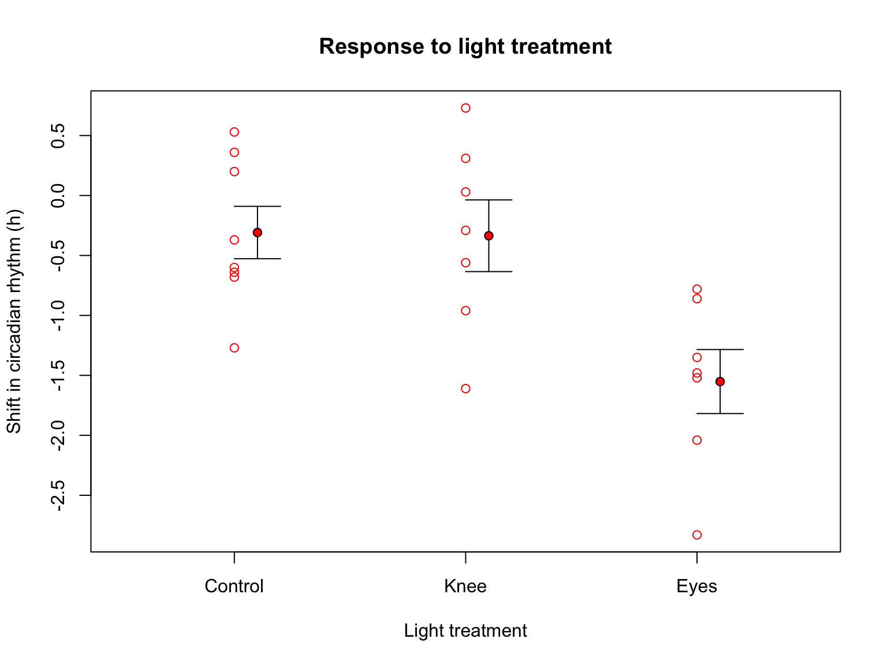
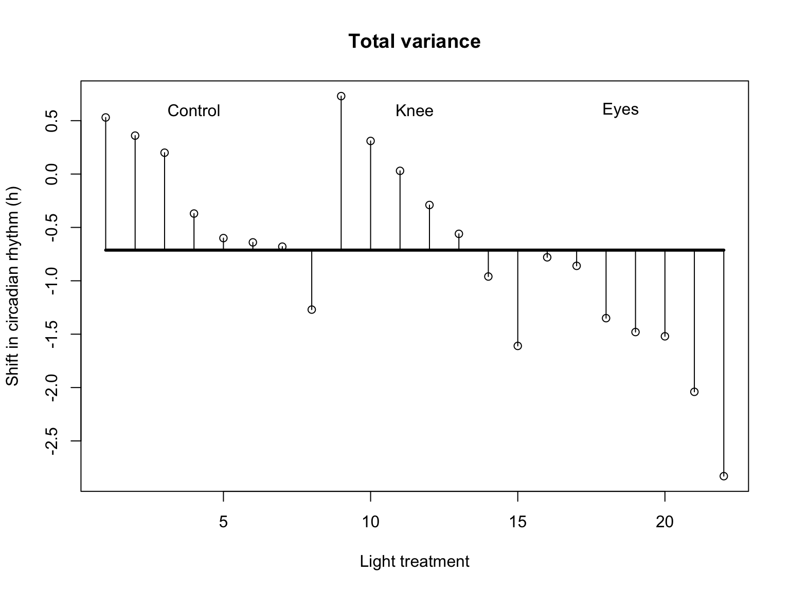
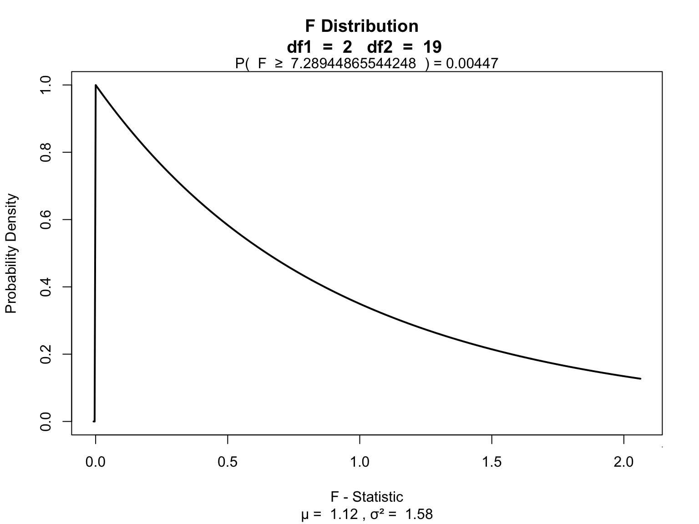
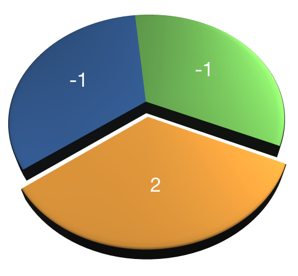
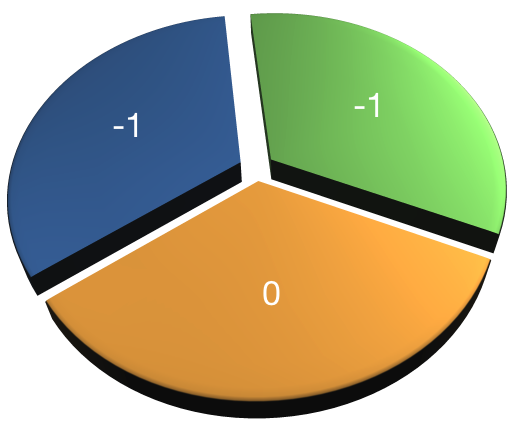
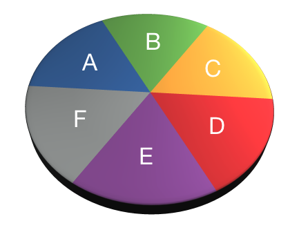
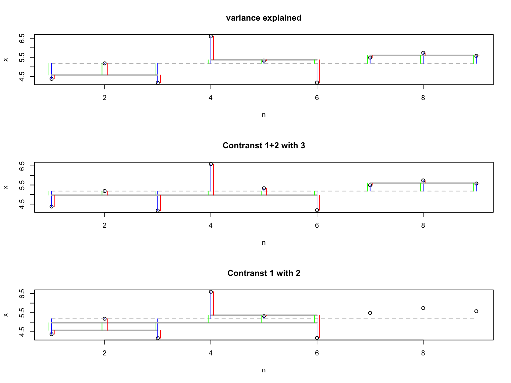

ANOVA
F-distribution & One-way independent
Klinkenberg
3 oct 2019
Inhoud
F-distribution
Ronald Fisher

The F-distribution, also known as Snedecor’s F distribution or the Fisher–Snedecor distribution (after Ronald Fisher and George W. Snedecor) is, in probability theory and statistics, a continuous probability distribution. The F-distribution arises frequently as the null distribution of a test statistic, most notably in the analysis of variance; see F-test.
Sir Ronald Aylmer Fisher FRS (17 February 1890 – 29 July 1962), known as R.A. Fisher, was an English statistician, evolutionary biologist, mathematician, geneticist, and eugenicist. Fisher is known as one of the three principal founders of population genetics, creating a mathematical and statistical basis for biology and uniting natural selection with Mendelian genetics.
Population distribution
layout(matrix(c(2:6,1,1,7:8,1,1,9:13), 4, 4))
n = 56 # Sample size
df = n - 1 # Degrees of freedom
mu = 120
sigma = 15
IQ = seq(mu-45, mu+45, 1)
par(mar=c(4,2,0,0))
plot(IQ, dnorm(IQ, mean = mu, sd = sigma), type='l', col="red")
n.samples = 12
for(i in 1:n.samples) {
par(mar=c(2,2,0,0))
hist(rnorm(n, mu, sigma), main="", cex.axis=.5, col="red")
}
F-statistic
\[F = \frac{{MS}_{model}}{{MS}_{error}} = \frac{{SIGNAL}}{{NOISE}}\]
So the \(F\)-statistic represents a signal to noise ratio by deviding the model variance component by the error variance component.
A samples
Let’s take two sample from our normal populatiion and calculate the F-value.
x.1 = rnorm(n, mu, sigma)
x.2 = rnorm(n, mu, sigma)
data <- data.frame(group = rep(c("s1", "s2"), each=n), score = c(x.1,x.2))
F = summary(aov(lm(score ~ group, data)))[[1]]$F[1]
F## [1] 0.3441866More samples
let’s take more samples and calculate the F-value every time.
n.samples = 1000
f.values = vector()
for(i in 1:n.samples) {
x.1 = rnorm(n, mu, sigma); x.1
x.2 = rnorm(n, mu, sigma); x.2
data <- data.frame(group = rep(c("s1", "s2"), each=n), score = c(x.1,x.2))
f.values[i] = summary(aov(lm(score ~ group, data)))[[1]]$F[1]
}
k = 2
N = 2*n
df.model = k - 1
df.error = N - k
hist(f.values, freq = FALSE, main="F-values", breaks=100)
F = seq(0, 6, .01)
lines(F, df(F,df.model, df.error), col = "red")
F-distribution
So if the population is normaly distributed (assumption of normality) the f-distribution represents the signal to noise ration given a certain number of samples (\({df}_{model} = k - 1\)) and sample size (\({df}_{error} = N - k\)).
The F-distibution therefore is different for different sample sizes and number of groups.
F-distribution
multiple.n = c(5, 15, 30)
multiple.k = c(2, 4, 6)
multiple.df.model = multiple.k - 1
multiple.df.error = multiple.n - multiple.k
col = rainbow(length(multiple.df.model) * length(multiple.df.error))
F = seq(0, 10, .01)
plot(F, df(F, multiple.df.model[1], multiple.df.error[1]), type = "l",
xlim = c(0,10), ylim = c(0,.85),
xlab = "F", ylab="density",
col = col[1], main="F-distributions" )
dfs = expand.grid(multiple.df.model, multiple.df.error)
for(i in 2:dim(dfs)[1]) {
lines(F, df(F, dfs[i,1], dfs[i,2]), col=col[i])
critical.f <- qf(.95, dfs[i,1], dfs[i,2])
f.alpha <- seq(critical.f, 1000, .01)
polygon(c(f.alpha, rev(f.alpha)), c(df(f.alpha, dfs[i,1], dfs[i,2]), f.alpha*0 ), col= rgb(1,.66,0, .5), border = col[i])
lines(c(critical.f+.1, 5), c(.02, .2), col=col[i])
}
text(5,.2, expression(paste(alpha, "= 5%")), pos =3)
legend("topright", legend = paste("df model =",dfs[,1], "df error =", dfs[,2]), lty=1, col = col, cex=.75)
F-distribution

One-way independent ANOVA
Compare 2 or more independent groups.
Assumptions
Assuming th \(H_0\) hypothesis to be true, the following should hold:
- Continuous variable
- Random sample
- Normaly distributed
- Shapiro-Wilk test
- Equal variance within groups
- Levene’s test
Jet lag
Wright and Czeisler (2002) performed an experiment where they measured the circadian rhythm by the daily cycle of melatonin production in 22 subjects randomly assigned to one of three light treatments.
- Control condition (no light)
- Knees (3 hour light to back of knees)
- Eyes (3 hour light in eyes)

Variance components
| Variance | Sum of Squares | DF | Mean Squares | F-ratio |
|---|---|---|---|---|
| Model | \({SS}_{model} = \sum n_k(\bar{X}_k - \bar{X})^2\) | \(k-1\) | \(\frac{{SS}_{model}}{{df}_{model}}\) | \(\frac{{MS}_{model}}{{MS}_{error}}\) |
| Error | \({SS}_{error} = \sum s_k^2 (n_k - 1)\) | \(N-k\) | \(\frac{{SS}_{error}}{{df}_{error}}\) | |
| Total | \({SS}_{total} = {SS}_{model} + {SS}_{error}\) | \(N-1\) | \(\frac{{SS}_{total}}{{df}_{total}}\) |
Where \(N\) is the total sample size, \(n_k\) is the sample size per category and \(k\) is the number of categories. Finally \(s_k^2\) is the variance per category.
Total variance
\[{MS}_{total} = s_x^2\]
## [1] 0.7923732## [1] 0.7923732\[{SS}_{total} = s_x^2 (N-1)\]
## [1] 16.63984## [1] 16.63984Visual \({SS}_{total}\)
# Assign labels
lab = c("Control", "Knee", "Eyes")
# Plot all data points
plot(1:N,x,
ylab="Shift in circadian rhythm (h)",
xlab="Light treatment",
main="Total variance")
# Add mean line
lines(c(1,22),rep(mean(x),2),lwd=3)
# Add delta lines / variance components
segments(1:N, mean(x), 1:N, x)
# Add labels
text(c(4,11.5,18.5),rep(.6,3),labels=lab)
Model variance
\[{MS}_{model} = \frac{{SS}_{model}}{{df}_{model}} \\ {df}_{model} = k - 1\]
Where \(k\) is the number of independent groups and
\[{SS}_{model} = \sum_{k} n_k (\bar{X}_k - \bar{X})^2\]
ss.m.c = n.c * (mean(x.c) - mean(x))^2
ss.m.k = n.k * (mean(x.k) - mean(x))^2
ss.m.e = n.e * (mean(x.e) - mean(x))^2
ss.m = sum(ss.m.c, ss.m.k, ss.m.e); ss.m## [1] 7.224492## [1] 3.612246Visual \({SS}_{model}\)

Error variance
\[{MS}_{error} = \frac{{SS}_{error}}{{df}_{error}} \\ {df}_{error} = N - k\]
where
\[{SS}_{error} = \sum_{k} s_k^2 (n_k - 1) = \sum_{k} \frac{\sum (x_{ik} - \bar{x}_k)^2}{(n_k - 1)} (n_k - 1)\]
ss.e.c = var(x.c) * (n.c - 1)
ss.e.k = var(x.k) * (n.k - 1)
ss.e.e = var(x.e) * (n.e - 1)
ss.e = sum(ss.e.c, ss.e.k, ss.e.e); ss.e## [1] 9.415345\[{MS}_{error} = \frac{{SS}_{error}}{{df}_{error}} \\ {df}_{error} = N - k\]
## [1] 0.4955445Visual \({SS}_{error}\)

Variance components
\[{SS}_{total} = {SS}_{model} + {SS}_{error}\] \[16.6398364 = 7.2244917 + 9.4153446\]
\[{MS}_{total} = \frac{{SS}_{total}}{{df}_{total}}= 0.7923732\] \[{MS}_{model} = \frac{{SS}_{model}}{{df}_{model}}= 3.6122459\] \[{MS}_{error} = \frac{{SS}_{error}}{{df}_{error}} = 0.4955445\]
F-ratio
\[F = \frac{{MS}_{model}}{{MS}_{error}} = \frac{{SIGNAL}}{{NOISE}}\]
## [1] 7.289449Reject \(H_0\)?

Contrasts
Planned comparisons
- Exploring differences of theoretical interest
- Higher precision
- Higher power
Contrasts
- Only use chunks once
- Values add up to 0
 

- AB-CDEF → A-B → CD-EF → C-D → E-F
- A-BCDEF → A-B → A-C
- A-BCDEG → BC-DEF → B-C → B-DEF
- ABC-DEF → BC-DEF → B-C
Assign values that combine to one. Same values define chunk.
- AB-CDEF → A-B → CD-EF → C-D → E-F
| A | B | C | D | E | F | |
|---|---|---|---|---|---|---|
| Contrast 1 | ||||||
| Contrast 2 | ||||||
| Contrast 3 | ||||||
| Contrast 4 |

Post-hoc
Unplanned comparisons
- Exploring all possible differences
- Adjust T value for inflated type 1 error
| C | K | E | |
|---|---|---|---|
| C | 2 | 3 | |
| K | 4 | 6 | |
| E | 7 | 8 |
Effect size \(\eta^2\)
The amount of explained variance \(R^2\) as a general effect size measure.
\[R^2 = \frac{{SS}_{model}}{{SS}_{total}} = \eta^2\] Taking the square root gives us Cohen’s \(r\).
Effect size \(\omega^2\)
Less biased towards just the sample is omega squared \(\omega^2\).
\[\omega^2 = \frac{{SS}_{model} - ({df}_{model}){MS}_{error}}{{SS}_{total}+{MS}_{error}}\] But what does it say?
Effect size \(r\)
A more interpretable effect size measure is \(r_{Contrast}\). Which gives the effect size for a specific contrast.
\[r_{Contrast} = \sqrt{\frac{t^2}{t^2+{df}}}\]